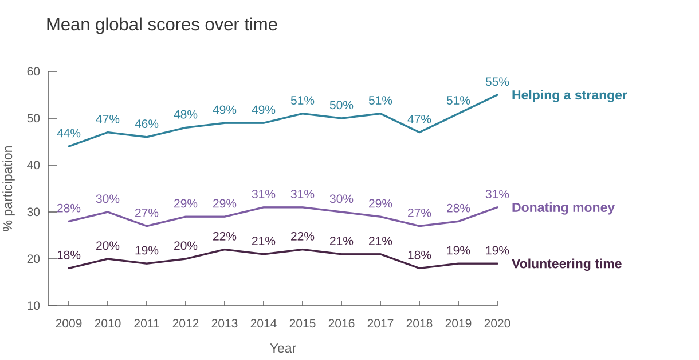
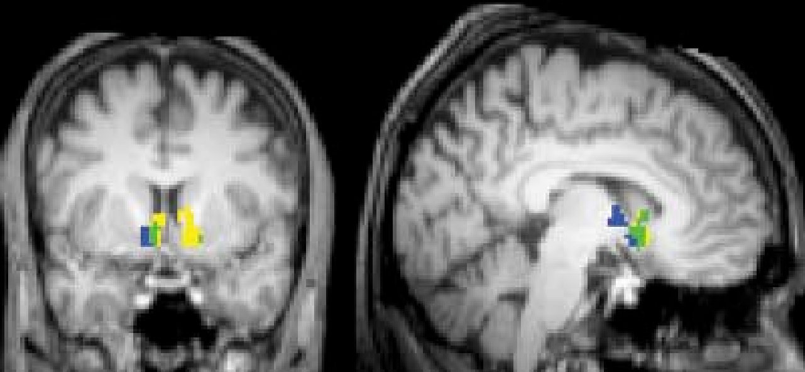
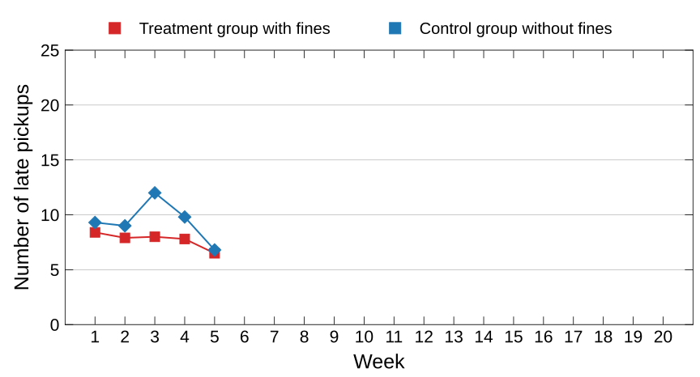
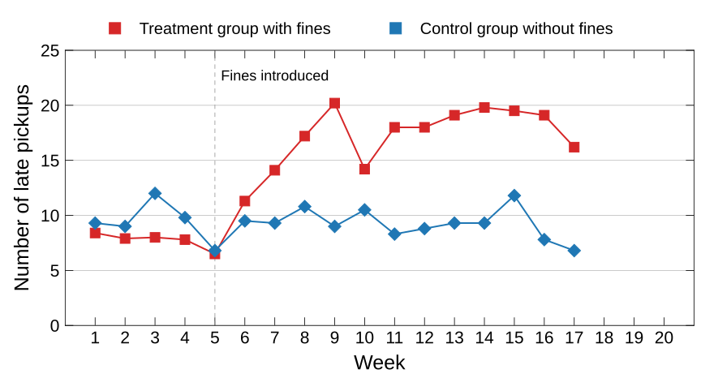
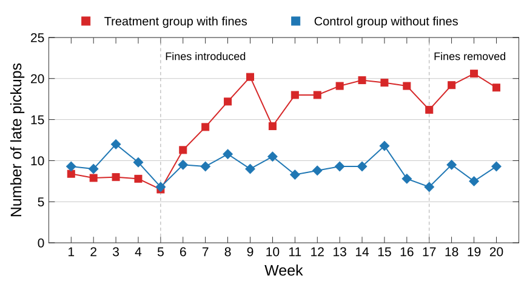

#4
November 2026
You will be randomly paired with another participant. Neither of you will know the other’s identity at any point during the experiment. There will be a single decision round.
Roles: allocator () and recipient ().
At the beginning of the experiment, will receive an initial endowment of €10.
must decide how much of the €10 to transfer to . The allocator may transfer all of it, some of it, or nothing at all.
does not make a decision, but must try to guess how much chose to transfer.
Participants may not communicate with one another.
Take the experiment seriously. One pair of students ( ) will be selected at random and paid according to ’s decision.
Institution: LUISS Guido Carli
Course: Behavioral Economics and Consumer Decision Making II
Account type: participant
Question: How much did you transfer to the recipient? What was your reasoning?
To answer anonymously, you can:
2544 095.The game you have just played is known as the dictator game (Kahneman, Knetsch, and Thaler 1986).
It is designed to study decisions in situations where self-interest and equality are in conflict.
To read the paper, click HERE.
Social preferences
Preferences that place value on what happens to other people.

The literature suggests at least two motives.
Pure altruism: I help others because I want them to be better off.
A pure altruist is motivated solely by other people’s well-being, not by personal gain.
Suppose you are deciding whether to help fund a public library.
If you are a pure altruist, you donate because you value knowing that the library will be built.
If you are an impure altruist, you donate because you value knowing that you contributed to the project.
Pure and impure altruism are not mutually exclusive.
Each participant received $100.
Some participants could choose whether to donate part of this amount to a local food bank.
For the other participants, money was deducted automatically from their endowment, much like an income tax, and transferred to the food bank.

Consistent with pure altruism, compulsory transfers to a charity generate satisfaction and activate brain regions involved in reward processing.
Consistent with the warm glow motive, satisfaction and neural activity increase further when people make voluntary transfers.
Both pure and impure altruism play a role in charitable giving.
Social preferences can be highly sensitive to the context in which decisions are made. Consider the following example.
Parents sometimes struggle to pick up their children from day care on time.
When parents arrive late, day-care staff have to stay beyond their scheduled hours.
What would you do to discourage parents from arriving late?
Gneezy and Rustichini (2000) conducted a field experiment in Haifa. They introduced fines for late pickup at some day-care centers, while leaving others unchanged as a control group.
The following notice was posted at the centers in the treatment group:
NOTICE TO PARENTS
Because some parents have been arriving late, we have decided — with the approval of the Israel Private Daycare Authority — to fine parents who pick up their children late. Beginning next Sunday, a fine of NIS 10 [about €3] will be charged whenever a child is collected after 4:10 p.m.


Parents in the treatment group responded to the fines by doubling the frequency of late pickups!
After twelve weeks, the fines were removed.
What do you think happened next?

Why did the fines have the opposite of their intended effect?
Possible explanation
The experiment suggests that material incentives (such as the price of being late) can sometimes make people behave more selfishly than they otherwise would.
When fines or prices have this unintended effect, we say that incentives appealing to material self-interest crowd out social preferences.
This crowding-out effect can persist. In this example, parents continued to pick up their children late even after the fines were removed.
Social preferences